dunstBIO Program 2003
Hver onsdag 20:00 - 22:00
Der vises en forfilm (varighed 5 - 20 min ) før hver film indenfor animation, musikvideo, videokunst, kortfilm og dokumentar. Hvis du har noget, du gerne vil vise kan du kontakte Jørgen eller Anders på biodunst.dk
Tak til Slagtehal 3 i Århus for support
Another Country by Marek Kanievska starring Rupert Everett, Colin Firth
UK, 1984 86 mins VHS English
An elderly, exiled British spy looks back on his life at school during an interview with an American journalist. As he remembers his days at an English boarding school in the 1930s, the film moves to Britain chronicling his young life. In school, he falls in love with a young, male classmate, exploring his homosexuality. He is also exposed to Marxist ideas for the first time, both of which, ostensibly, contribute to his later activities as a spy.
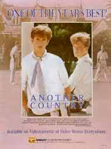
Beautiful Thing By Hettie Macdonald Starring: Glen Berry; Scott Neal; Ben Daniels
UK, 1996 90 mins VHS, copy English Danish subtitles
Based on the stageplay of the same name by Jonathan Harvey, Hettie Macdonald's film debut delves into the working class housing projects of southeast London with all the sweet giddiness of the teenage love story that unfolds there. Three teenage neighbors and their single parents live next door to one another. Leah (Tameka Empson), a young black woman, spends her days lip synching to Mama Cass and her nights getting drunk and partying. Next door is Jamie (Glen Berry), a quiet white boy who's always getting ribbed at school, he lives with Sandra, his pub manager mom who's constantly bickering with Leah. Next door to him is his schoolmate, Ste (Scott Neal), a young white jock who lives with his abusive father and older brother. One night Ste is beaten up by his brother and finds refuge next door in Sandra's flat. As the two boys sleep side by side in bed, Jamie realizes he's in love with Ste. Eventually, Ste realizes he's in love too and their teenage experimentation turns into a full blown love affair that blots out almost all the pain and sorrow in the rest of their lives. Director Macdonald is also drawn into this escapism, building on the excitement of what it's like to discover a whole new world. The film's traces of the saccharine underscore its familiar approach to first love (albeit with proletarian fags) and how audiences consume a love story as voyeurs. In "Beautiful Thing," the working class realities that surround the young lovers may sometimes be adverse to their relationship, but it's still a place where love can flourish. In the final moments of the film, Macdonald sets her characters waltzing together in the bright daylight of the housing project's courtyard, reminding us that love is a fiction that has the possibility of transgressing every rule.

Bent Out of Shape Short film by Orla Walsh Roisin Rua Films
Ireland, 1995 28 mins. VHS, TV copy English
Danny, a gay punk working in a sleazy video shop, befriends Stephen, a lonely bullied boy...but their friendship has consequences.
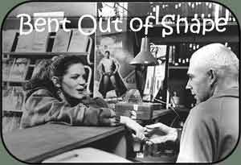
The Boys in the Band By William Friedkin Starring Frederick Combs, Leonard Frey, Cliff Gorman
USA, 1970 118 mins VHS, copy English
"The Boys in the Band" was the first Hollywood film entirely about homosexuality. From our lengthy historical distance this depressing -- but always entertaining -- gay birthday party is an amusing period piece indeed. (PlanetOut)
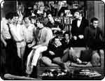
Demonstration for bevarelse af Christiania, kl. 12
Starter midt på Christiania
dunst har brug for hjælp.
Søndag den 30. Marts 2003, kl. 11
Pakker vi alt i dunst ned, så det er klart til at flytte ud
i vore nye lokaler nemlig bøssehuset.
Kom og hjælp med ned pakningen. Adressen er: i Sommerstedgade
30, kld.
(ikke langt fra Dybbelsbrostation)
Men vi flytter først næste weekend. Lørdag den 5.
April. Der har vi også brug for folk.
Har du spørgsmål ring til Dennis Agerblad tlf: 20 12 23 12
Doña Herlinda and Her Son Doña Herlinda y Su Hijo by Jaime Humberto Hermosillo starring Arturo Meza, Marco Antonio Trevino, Guadalupe Del Toro
Mexico, 1985 90 mins VHS Spanish English subtitiles
A sophisticated social comedy directed by Jaime Humberto Hermosillo, one of Mexico's most daring, original filmmakers. Dona Herlinda is a wealthy, fantastically manipulative widow living in Guadalajara who quietly accepts her son Rudolfo's affair with a handsome young music student, Ramon. After she invites Ramon to live with her family ("Rudolfo has such a big bed," she says) the situation becomes hilariously complicated by Rudolfo's marriage of convenience to Olga, a feminist and employee of Amnesty International. Dona Herlinda's comedy lies in watching Dona Herlinda flawlessly manipulate the people in her life while maintaining a Nancy Reagan-like facade of cool detachnent. Despite all the possibilities for disaster the characters in this film react to unbelievable situations with deadpan nonchalance. Jaime Humberto Hermosillo has directed twelve features -- most dealing with the conventions and petty concerns of middle class society. Dona Herlinda is his third collaboration with producer Manual Barbachano Ponce, one of Mexico's most important independent film producers.
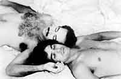
dunst har brug for hjælp.
Vi flytter ud i bøssehuset. alt er pakket. men skal flyttes
ind i en flyttevogn. Vi har brug for stærke arme.
Vi flytter fra:
Sommerstedgade 30, kld. (ikke langt fra Dybbelsbrostation)
Har du spørgsmål ring til Dennis Agerblad tlf: 20 12 23 12
9
Cremaster 4 (1994) Directed by Matthew Barney
Matthew Barney's "Cremaster 4" is an excellent example of what can be achieved in the area of video art. "Cremaster 4" contains no verbal dialogue, but exists purely in the visual (with audio accompaniment). While not made with the budget and means of perhaps Barney's later "Cremaster 3," "Cremaster 4" is a successful enveiling of various processes that reference issues of gender and masculinity, sports, and Barney's own mythology/ iconography. I believe what makes Barney's work so significant is his dealing with issues from contemporary American culture that artists previously either rejected or deemed unworthy as subject material.

Hamam - Il bagno turco by Ferzan Ozpetek Starring: Alessandro Gassman ; Carlo Cecchi ; Halil Ergun
Italy, 1998 94 mins VHS, copy Italian, Turkish Danish subtitiles
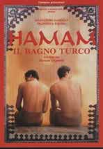
Happy Together Director: Wong Kar Wai, Starring: Leslie Cheung ; Tony Leung Chiu Wai ; Chang Chen
Hong Kong, 1997 98 mins VHS Chinese, English subtitles
The queer film genre of the obsessive love-hate gay male relationship is alive and well in this sultry tale. Happy Together starts out with sodomy a la spit under the worst flourescent light and recorded on the grainest of film stock. The plot is simple: a handsome young gay male couple from Hong Kong has moved to Buenos Aires and there are countless scenes of kissing, tangos (yes male-male dancing), arguing, working at bad jobs, breaking beer bottles, breaking up, and searching for each other -- often in vain. Fortunately for both the protagonists and the audience, the only assaults on the body are symbolic in the form of one lover's purposely hiding of the other's Hong Kong Overseas British passport. This film is a meditation on bitter sweet loss and misery as the purest form of love and eroticism. Southern Chinese gay male stud culture busts out in the land of the tango.

Latin Boys Go to Hell by Ela Troyano starring Irwin Ossa, John Bryant Davila, Alexis Artiles ; Rebecca Sumner Burgos ; Dashia
USA, 1996 75 mins. VHS English
Adapted by Ela Troyano and Andre Salas from Salas' novel of the same name, Latin Boys Go To Hell tells the story of Justin Vega, who falls in love with his cousin Angel, who in turn is in love with Andrea, whose best friend heads off on a murder streak when his boyfriend dumps him.
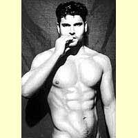
The Living End by Gregg Araki starring Craig Gilmore, Mike Dytri
USA, 1991, 83 mins. VHS English
Two fatalistic L.A. boys--one's an impulsive, on-the-edge psycho cutie; the other listens to The Smiths a lot, and likes Godard movies--discover they're HIV positive and set about on an unplanned, unhinged serio-comic spree of violence and abandon. The Living End has been described as a homo Thelma & Louise, which is true enough--but it's also far more than that. Director Gregg Araki has taken on the issues and energy of gay youth in 1992, and turned them into a mad, anarchic and unsettlingly powerful experience. ("It's mostly set on the road," explains Araki. "It's like a Hope/Crosby movie . . . in which Crosby fucks Hope.")
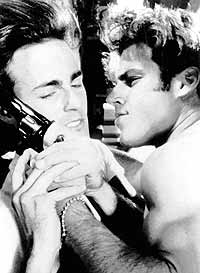
Torch Song Trilogy Directed by Paul Bogart
USA (1988) English
Award-winning actor and playwright Harvey Fierstein re-creates his role as the unsinkable Arnold Beckoff in this film adaptation of the smash Broadway play TORCH SONG TRILOGY. A very personal story that is both funny and poignant, TORCH SONG TRILOGY chronicles a New Yorker's search for love, respect and tradition in a world that seems not especially made for him. From Arnold's hilarious steps toward domestic bliss with a reluctant school teacher, to his first truly promising love affair with a young fashion model, Arnold's greatest challenge remains his complicated relationship with his mother. But armed with a keenly developed sense of humor and oftentimes piercing wit, Arnold continues to test the commonly accepted terms of endearment--and endurance--in a universally affecting story that confirms that happiness is well worth carrying a torch for.
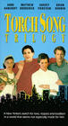
Scorn By Sturla Gunnarson Starring Eric Johnson, Brendan Fletcher, Bill Switzer
Canada, 2000 91 mins VHS, copy English Danish subtitles
Subtlety is not Scorn's strong suit. Its telling of the true story of a young British Columbia psychopath who decided to hurry along his inheritance by having his family killed spends so much time quoting and referencing Camus' Caligula that one wishes Gunnarson had just gone ahead and told his story as an actual adaptation of that play instead. Yet, Eric Johnson's showpiece performance as the coldly manipulative Darren Huenemann is never less than electric. He imbues the character he's portraying with an innate sense of playing a part, a perfect choice in bringing to life a young man who is always striving to be 'on'. The character's heightened sense of theatricality, however, often rubs up uncomfortably against the ordinariness of his western Canadian surroundings, leading to snatches of dialogue or sometimes whole scenes that you can't quite believe any of the other characters could ever take seriously. As portrayed, Darren is too large for these lives. Supporting performances are largely TV-movie mediocre, but I should single out Brendan Fletcher for coming within a hair of stealing the movie for himself with his portrayal of Darren's right-hand man. Ultimately, he telegraphs the insecurities we suspect are inside him just a little too loudly -- an overly broad toss of his head, one too many twitches of his lip -- and destroys much of the air of danger that his character has been trying so desperately to create. Nevertheless, the scene between him and Darren in the car post-murder speaks loudly about the differences in their personalities despite their seemingly similar lack of concern for others. Darren's friend acts tough to protect his true nature; Darren's behaviour is actually a refinement of the coldness already inside him
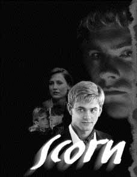
Soldier of Orange by Paul Verhoeven starring Rutger Hauer, Jeroen Krabbé 1977,
the Netherlands 149 mins DVD Dutch English subtitles available Includes extras
Sweeping, true-life drama about six Dutch classmates torn apart by WWII. With its richly developed characters, moving narrative, and engaging suspense, this is guaranteed satisfaction for war, drama, art-house fans.
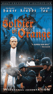
Stonewall by Nigel Finch starring Guillermo Diaz, Frederick Weller based on the book "Stonewall" by Martin Duberman
USA/UK, 1995 98 mins. VHS English

Totally F***ed Up by Gregg Araki Starring: James Duval ; Gilbert Luna ; Roko Belic
USA, 1994 85 mins VHS English
Think of it as Jean Luc Godard doing "Saved by the Bell," or Antonioni doing "Beverly Hills 90210." Gregg Araki's Totally F***ed Up is a film very grounded in the L.A. thing. Woo-woo, it's alienation galore as six homoteens bursting with angst hang around a landscape of empty parking structures, deserted car washes, swimming pools, and mind-numbing billboards to whine, kvetch and agonize about drugs, sex, dating, suicide, violence, family, identity, and homosexuality. Oh, and they get to wear really fab eyewear and neat thrift-store fashions while doing it. Intercut with titles, clips of movies, porn, videos, and television bites, it's cynicism galore as teen romance and hormones *ucks with being young, queer, and in L.A.

Victim by Basil Dearden starring Dirk Bogarde, Sylvia Syms, Dennis Price
UK, 1961 100 mins. VHS English
This groundbreaking thriller marked a major turning point for the subject of homosexuality onscreen. Dirk Bogarde stars as Melville Farr, a self-confessed, non-practicing homosexual, who risks his marriage and career to track down a ring of blackmailers (in 1961, 90% of all blackmail cases in the English courts were homosexual in origin). Co-starring Sylvia Syms as his appalled but supportive wife, Peter McEnery as Boy Barrett (Bogarde's chaste "friend" who hangs himself in jail), and a brilliant batch of queer supporting characters. With its vivid London locations and fast-paced suspense, Pauline Kael called Victim "ingenious." In the wake of the British government's 1957 Wolfenden Report (recommending the decriminalization of homosexuality) Victim consciously set out to change British law and the public's perceptions of homosexuality. Six years later, the Sexual Offenses Act of 1967 finally decriminalized homosexuality between consenting adults over the age of 21 (with a number of exceptions).

The Fourth Man Der vierte Mann by Paul Verhoeven starring Jeroen Krabbé, Renee Soutendijk, Thom Hoffman, Geert De Jong based on a novel by Gerard Reve
The Netherlands, 1983 104 mins. VHS, copy Dutch English subtitles
Gerard Reve, a Dutch gay Catholic writer travels from Amsterdam to Vlissingen to speak; his stories, he says, "lie the truth." One of the listeners, Christine Halsslag, a seductive beautician, invites him to stay the night. Next day, he sees a photo of her boyfriend, a German plumber. He convinces her to bring Herman to town and sets out to seduce him. Gradually, aided by visions and nightmares, he's sure Christine's a murderous widow who has killed three husbands; he or Herman will be the fourth man. Is he mad or prescient?
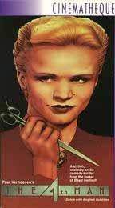